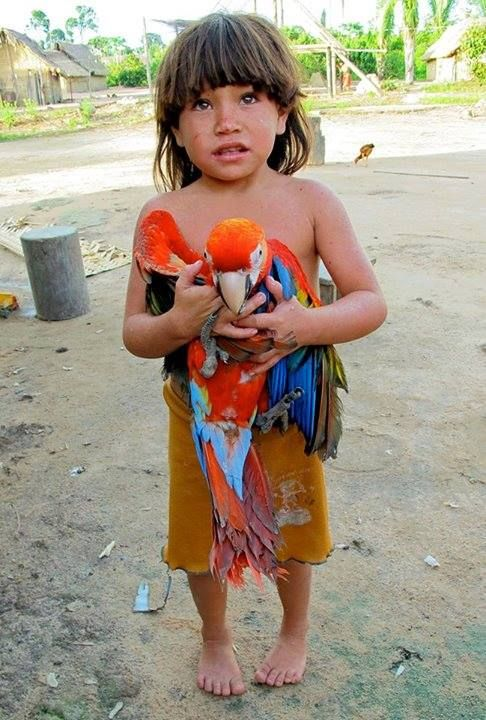

O Parque Indígena do Xingu engloba, em sua porção sul, a área cultural conhecida como alto Xingu, formada pelos povos Aweti, Kalapalo, Kamaiurá, Kuikuro, Matipu, Mehinako, Nahukuá, Naruvotu, Trumai, Wauja e Yawalapiti . A despeito de sua variedade linguística, esses povos caracterizam-se por uma grande similaridade no seu modo de vida e visão de mundo. Estão ainda articulados em uma rede de trocas especializadas, casamentos e rituais inter-aldeões. Entretanto, cada um desses grupos faz questão de cultivar sua identidade étnica e, se o intercâmbio cerimonial e econômico celebra a sociedade alto-xinguana, promove também a celebração de suas diferenças.
Apesar do intenso intercâmbio entre diferentes povos do Parque, cada qual mantém a sua língua. Nele estão representadas as seguintes famílias linguísticas:
• Família Tupi-Guarani (do tronco Tupi): Kamayurá e Kaiabi
• Família Juruna (do tronco Tupi): Yudja
• Família Aweti (do tronco Tupi e com uma única língua): Aweti
• Família Aruak: Mehinako, Wauja e Yawalapiti
• Família Karib: Ikpeng, Kalapalo, Kuikuro, Matipu, Nahukwá e Naruvotu
• Família Jê (do tronco Macro-Jê): Kĩsêdjê e Tapayuna
• Língua não classificada em qualquer família: Trumai
No Alto Xingu, as aldeias são formadas por casas comunais dispostas em perímetro ovalado, em torno de uma praça de chão batido. No centro desta praça fica a chamada casa dos homens. Além de ser um ponto de reunião masculino, a construção oculta as flautas sagradas, interditas ao olhar feminino, e que são por isso tocadas no interior da casa ou à noite no pátio, quando as mulheres estão recolhidas.
O centro da praça é também o lugar onde se enterram os mortos, onde se realizam os rituais, onde os pagamentos cerimoniais são feitos, onde o chefe recebe mensageiros de outros grupos e profere seus discursos ao grupo local; é ainda lá que os homens realizam as lutas (huka huka, descritas no item O longo ritual do Kwarup) entre membros de aldeias diferentes durante todos os encontros formais.
Informações Adicionais:
(LINK) Todas as informações
(LINK) Informação extra 1 - Povo Xingu
(LINK) Informação extra 2 - Parque Indígena do Xingu
(LINK) Informação extra 3 - Cultura